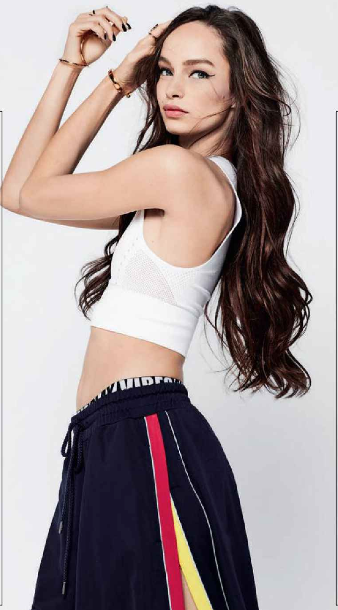

На своей длине
Многие девушки ставят целью отрастить волосы, и длина мечты у каждой

Длинным волосам требуется тщательный уход, так как их "возраст" больше, а следовательно, больше и время повреждающего воздействия на протяжении их роста. Если волосы сами по себе плотные, толстые и не очень часто подвергаются горячей укладке, то можно "освежать" кончики только раз в 3-4 месяца. Стресс может провоцировать уходшения состояния внешнего вида волос. Если они потерли блеск, начали ломаться и выпадать, это может быть призывом твоего организма обратить на себя внимание, выдохнуть и снизить темп - высыпаться, гулять на свежем воздухе и больше общаться с близкими, любимыми людьми.
Меня часто спрашивают, сколько раз в неделю стоит мыть голову. Эксперты считают, что делать это необходимо по мере загрязнения волос. В зависимости от их типа и загрязненности окружающей среды При поврежденных, окрашенных и сухих волосах бальзам просто необходим - он поможет придать локонам гладкость, блеск и легкость расчесывания. Не все понимают разницу между бальзамом и маской для волос. В то же время как это совершенно разные продукты - формула маски более интенсиваная и должна использоваться после кондиционера.